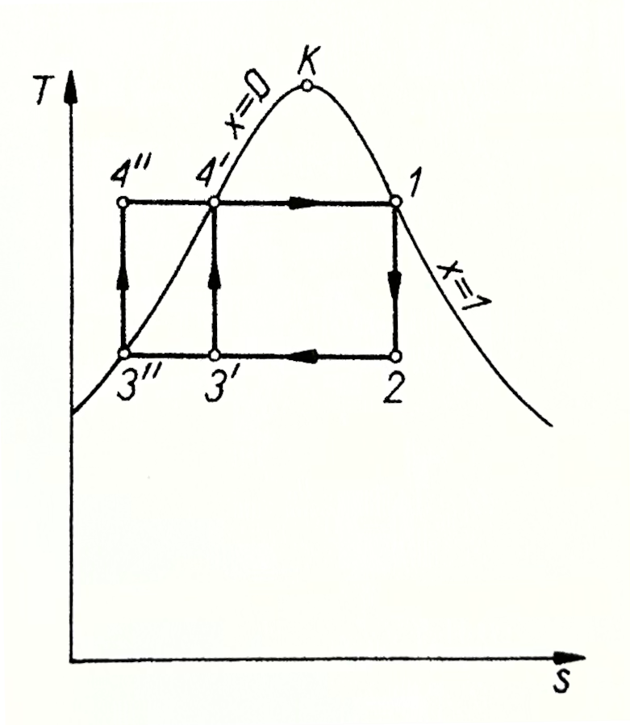
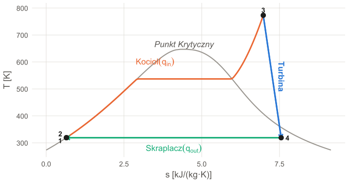
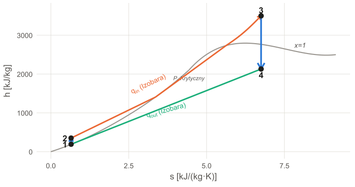
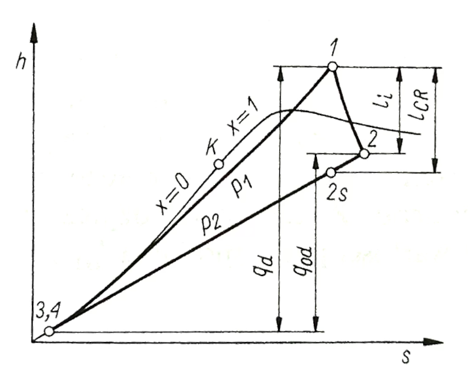
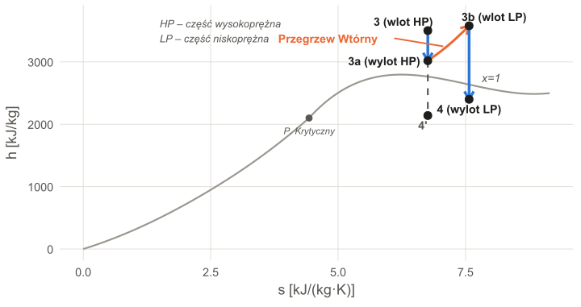
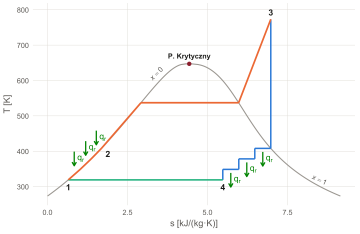
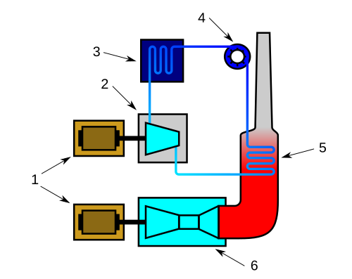
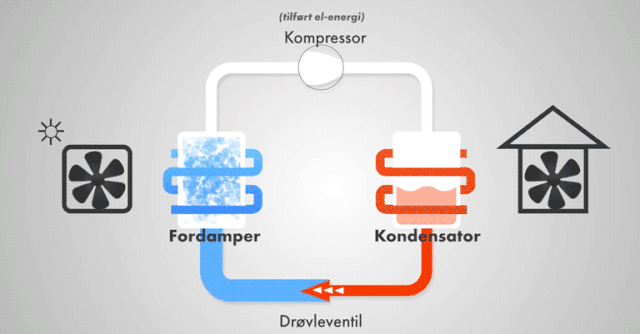

W10: Obiegi Parowe (Siłownie)
Obieg Rankine’a i Układy Parowo-Gazowe
prof. UPP dr hab. inż. Marek Urbaniak
Wydział Inżynierii Środowiska i Inżynierii Mechanicznej


Agenda Wykładu
- Fundament Energetyki (Dlaczego para?)
- Obieg Clausiusa-Rankine’a (Schemat i T-s)
- Suchość Pary i erozja łopatek.
- Przegrzew Wtórny (Reheat)
- Regeneracja Podgrzewaczowa (Regeneration)
- Układy Gazowo-Parowe (CCGT)
1. Dlaczego Para Wodna?
Siłownie parowe produkują ok. 55–60% elektryczności na świecie (węgiel, atom, biomasa, część parowa bloków gazowo-parowych; Ember 2023). Woda jest tania, nietoksyczna i ma ogromne ciepło parowania.
Komponenty Siłowni:
- Pompa wodna: Spręża ciecz (mała praca, bo ciecz ma małą objętość właściwą: \(l_p \approx v\,\Delta p\)).
- Kocioł (Generator Pary): Dostarcza ciepło, zamienia wodę w parę.
- Turbina: Para rozpręża się, napędzając generator.
- Skraplacz: Para skrapla się do wody (oddając ciepło do rzeki/chłodni).
Obieg Carnota dla Pary Wodnej
Obieg Carnota jest teoretycznym maksimum sprawności, ale w praktyce jest niemożliwy do zrealizowania dla pary wodnej.
W teorii para musiałaby być skraplana tylko częściowo, a następnie para mokra (mieszanina dwufazowa) sprężana izentropowo do cieczy nasyconej przy ciśnieniu kotła (pkt \(3' \to 4'\)), co jest niemożliwe w praktyce. Sprężanie samej cieczy w pompie to już obieg Rankine’a.

Źródło: “Termodynamika Techniczna” Wiśniewski (2017)
2. Obieg Clausiusa-Rankine’a (C-R)
Jest to obieg porównawczy dla elektrowni parowych i jądrowych. W przeciwieństwie do Otto/Diesla, zachodzi tu zmiana fazy czynnika.
Jest to praktyczna modyfikacja obiegu Carnota dla pary: para jest skraplana całkowicie, a pompa spręża samą ciecz.
Wykres h-s (Molliera) jest kluczowy do analizy tego obiegu, ponieważ praca techniczna i ciepło są odcinkami entalpii (\(\Delta h\)).
- Praca turbiny: \(l_t = h_3 - h_4\) (spadek entalpii w pionie dla idealnej turbiny).
- Ciepło doprowadzone: \(q_{in} = h_3 - h_2\) (różnica entalpii pary świeżej na wylocie z kotła i wody zasilającej).
Praca pompy jest zwykle pomijalnie mała.
Wykres T-s dla C-R

Uwaga
Punkty 1-2 w rzeczywistości niemal nakładają się na siebie, ponieważ woda jest w zasadzie nieściśliwa.
- 1-2: Sprężanie adiabatyczne wody w pompie (nieodwracalne, \(\eta_p = 0{,}85\)).
- 2-3: Izobaryczne podgrzewanie, wrzenie i przegrzewanie w kotle.
- 3-4: Rozprężanie adiabatyczne pary w turbinie (nieodwracalne, \(\eta_t = 0{,}85\)).
- 4-1: Izobaryczne (i izotermiczne) skraplanie.
Sprawność: \[ \eta_{\text{C-R}} = \frac{l_{\text{turbiny}} - l_{\text{pompy}}}{q_{\text{dostarczone}}} \approx \frac{h_3 - h_4}{h_3 - h_2} \]
Wykres h-s (Molliera) dla C-R

Uwaga
Punkty 1-2 w rzeczywistości niemal nakładają się na siebie, ponieważ woda jest w zasadzie nieściśliwa.
Zalety wykresu h-s
Entalpia na osi Y: Wszystkie wielkości energetyczne (Praca, Ciepło) są pionowymi odcinkami. Nie trzeba liczyć pól powierzchni (jak w T-s).
Rozprężanie (Ekspansja) w turbinie: W przypadku idealnym (\(s=const\)) proces w turbinie jest linią pionową skierowaną w dół.
Łatwy odczyt spadku entalpii: \[ l_t = h_3 - h_4 \] To jest kluczowa wielkość dla projektanta turbiny.
Rzeczywisty obieg Rankine’a

Źródło: “Termodynamika Techniczna” Wiśniewski (2017). Oznaczenia na rysunku → w wykładzie: 1 → 3, 2s → 4s, 2 → 4, (3,4) → (1,2).
Sprawność Izentropowa Turbiny (\(\eta_{is}\))
Rzeczywista turbina nie jest idealna — występują tarcie, straty cieplne i turbulencje. Definiujemy sprawność izentropową jako stosunek pracy rzeczywistej do idealnej:
\[ \eta_{is} = \frac{h_3 - h_4}{h_3 - h_{4s}} \]
Adnotacja
- \(h_{4s}\) — entalpia na wylocie w procesie idealnym (izentropowym, \(s=const\))
- \(h_4\) — entalpia na wylocie w procesie rzeczywistym
- Typowe wartości: \(\eta_{is} = 0{,}75\text{–}0{,}90\)
Wskazówka
Rzeczywista entalpia wylotowa: \[ h_4 = h_3 - \eta_{is} \cdot (h_3 - h_{4s}) \]
Na wykresie h-s linia rozprężania odchyla się w prawo (wzrost entropii), ponieważ proces jest nieodwracalny.
3. Problem Wilgotności (Erozja)
Ograniczenia
Zauważ, że punkt 4 (wylot z turbiny) leży “pod kopułą”. Oznacza to, że jest to para mokra (mieszanina pary i kropelek wody).
- Jeśli \(x < 0{,}85\text{–}0{,}90\) (więcej niż 10-15% wody):
- Kropelki wody uderzają w łopatki wirnika z prędkością kilkuset m/s.
- Powoduje to erozję (wżery) i zniszczenie turbiny.
Rozwiązanie:
Musimy przesunąć punkt 4 w prawo. Jak?
- Zwiększyć temperaturę przegrzania \(T_3\) (Limity materiałowe stali).
- Zastosować Przegrzew Wtórny.
4. Przegrzew Wtórny (Reheat)
- Para rozpręża się w turbinie Wysokoprężnej (HP) tylko częściowo (nie wchodzi głęboko pod kopułę).
- Wracamy z parą do kotła i podgrzewamy ją ponownie do \(T_{max}\).
- Para wraca do turbiny Niskoprężnej (LP) i rozpręża się do ciśnienia skraplacza.
Zalety:
- Punkt końcowy przesuwa się w prawo (para suchsza).
- Zwiększa się średnia temperatura dostarczania ciepła (\(\eta \uparrow\)).
- Większa praca z 1 kg pary (dwa etapy ekspansji).
Wykres h-s: Przegrzew Wtórny

Analiza Wykresu
- 3 \(\to\) 3a: Pierwszy stopień rozprężania w turbinie wysokoprężnej (HP). Kończymy, zanim para stanie się zbyt mokra.
- 3a \(\to\) 3b: Powrót do kotła. Dostarczamy ciepło przy stałym (niższym) ciśnieniu. Entalpia rośnie.
- 3b \(\to\) 4: Drugi stopień rozprężania w turbinie niskoprężnej (LP).
Efekt:
Punkt 4 (z przegrzewem) leży znacznie bardziej na prawo niż punkt 4’ (bez przegrzewu). Suchość pary \(x_4 > x_{4'}\) (ok. 0,92 vs 0,81).
5. Regeneracja (Podgrzewanie Wody)
W zwykłym obiegu Rankine’a do kotła trafia zimna woda ze skraplacza (ok. 46 °C przy 0,1 bar). To marnotrawstwo spalać węgiel, żeby podgrzewać ją aż do temperatury wrzenia w kotle (ok. 264 °C przy 50 bar).
Rozwiązanie: Upuszczamy część pary z turbiny (zanim wykona pełną pracę) i używamy jej ciepła skraplania do podgrzania wody zasilającej kocioł.
- Woda wchodząca do kotła jest już gorąca.
- Sprawność rośnie o kilka punktów procentowych (wyższa średnia temperatura doprowadzania ciepła — zbliżamy się do Carnota).
- W nowoczesnych blokach mamy 7-9 wymienników regeneracyjnych.
Regeneracja na wykresie T-s

Analiza
- 1 \(\to\) 2: Podgrzewanie wody zasilającej w podgrzewaczach regeneracyjnych ciepłem \(q_r\) skraplającej się pary z upustów turbiny.
- 2 \(\to\) 3: Kocioł — ekonomizer, wrzenie i przegrzewanie pary do \(T_{max}\). Oszczędzamy paliwo, bo woda w punkcie 2 jest już gorąca!
- 3 \(\to\) 4: Ekspansja pary w turbinie z upustami. Na każdym stopniu para oddaje ciepło \(q_r\) do wody zasilającej.
- 4 \(\to\) 1: Skraplanie reszty pary w skraplaczu.
6. Układy Gazowo-Parowe (CCGT)
Combined-cycle power plant
Połączenie Braytona (W9) i Rankine’a (W10).
- Góra (Top Cycle): Turbina Gazowa (Spaliny wylotowe mają ~550°C).
- Kocioł odzyskowy (HRSG): Zamiast palić węgiel, używamy gorących spalin z TG do zagotowania wody.
- Dół (Bottom Cycle): Turbina Parowa zasilana z HRSG.
Wynik:
Z tego samego paliwa (gazu) mamy prąd z dwóch turbin! Sprawność: > 60% (Klasyczna węglowa ma max 46%). To obecnie najczystsza technologia spalania paliw kopalnych.

1 – generatory elektryczne, 2 – turbina parowa, 3 – skraplacz, 4 – pompa, 5 – kocioł odzyskowy (wymiennik ciepła), 6 – turbina gazowa. Źródło: COGES-diagram, Public domain, via Wikimedia Commons

Podsumowanie W10
- Obieg Rankine’a rządzi światową energetyką.
- Klucz do sprawności:
- Wysokie parametry pary (Ciśnienie i Temperatura).
- Niskie ciśnienie w skraplaczu (Próżnia).
- Regeneracja i Przegrzew.
- Skraplacz to konieczność (zamknięcie obiegu), ale i największa strata energii (ciepło odpadowe).
Pytanie na koniec
Dlaczego nie stosujemy wprost obiegu Carnota dla pary wodnej? (Dlaczego nie sprężamy pary mokrej w pompie?).
Odpowiedź
Pompy źle znoszą bąbelki gazu (kawitacja), a sprężanie dwufazowe jest technicznie trudne i energochłonne. Łatwiej skroplić całość i sprężać samą ciecz.
W następnym odcinku (W11)…
Chłodnictwo i Pompy Ciepła
- Obiegi Lewobieżne: Odwracamy strzałki na wykresach!
- II Zasada Termodynamiki w praktyce: Jak zmusić ciepło do przepływu od ciała zimniejszego do cieplejszego?
- Lodówka vs Pompa Ciepła: Dlaczego to (termodynamicznie) to samo urządzenie?
- Nowe narzędzie inżyniera: Wykres log p-h.

Źródło: Timpet, CC BY-SA 4.0, via Wikimedia Commons

Termodynamika Techniczna (W10)